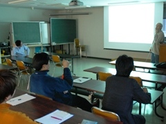
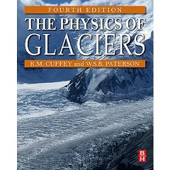

グループセミナー

氷河・氷床グループのメンバーが自らの研究を発表します。
研究室にお越しいただいた海外研究者や当研究室出身者に講話して頂くこともあります。
初回は新入生に学部時代にやっていたことなど、これまでの経験を自己紹介して頂きます。
不定期開催 ＠低温科学研究所講堂または会議室
参加希望の方は下記連絡先までご連絡ください。
担当者（今津）e-mail： takuro_imazu**lowtem.hokudai.ac.jp
(**のところに@を入れてください。)
[今年度セミナー]
| 日時 | 発表者 | 題目 |
| 6月20日 10:00~ | 波多 俊太郎 | LiDARによるカービング氷河末端形状測定 |
| 6月20日 10:00~ | 杉山 慎 | マルチビーム・ソナーによるパタゴニア・グレイ氷河末端の水中観測 |
| 6月13日 10:00~ | Tom Dangleterre | Influence of basal input data on spin-up simulations of the Antarctic ice sheet |
| 6月13日 10:00~ | 鵜飼 真汰 | グリーンランド北西部カナック氷河におけるドローンを用いた表面地形測量 |
| 6月6日 10:00~ | 今津 拓郎 | グリーンランド北西部カナック氷河における近年の流動速度変化 |
| 6月6日 10:00~ | 近藤 研 | 東南極ラングホブデ氷河における底面滑りの直接観測 |
| 6月6日 10:00~ | 佐藤 健 | グリーンランド北西部カナック氷河における氷レーダー探査 |
| 5月9日 10:00~ | 坂田 宙斗 | 半無限領域を対象とした面外波動問題のための基本解近似解法の開発 |
| 5月9日 10:00~ | 清水 洵哉 | 東シナ海における海洋熱波の数値実験 |
| 5月9日 10:00~ | 篠原 俊 | グリーンランドSEDomeアイスコアに含まれる金属成分の解析 |
| 4月27日 10:00~ | 豊山 孝子 | 雪の圧密過程に対する気圧の影響と土地被覆把握のための測量とリモートセンシング |
| 4月27日 10:00~ | 峰重 乃々佳 | 熱赤外線画像により特定された河道沿いの湧水分布と渓流水量水質変動の関係性 |
| 4月27日 10:00~ | 張 佳晏 | 高解像度DEMおよびSfM技術を用いた赤石山脈薮沢の氷河地形の考察および再検討 |
| 4月27日 10:00~ | 山田 宙昂 | 長いC-C単結合を有するジスピロフルオレン-アセナフテン誘導体の酸化還元応答 |
輪読会

氷河に関する基本的知識を身につけるために、みんなで集まって勉強会を行います。
現在読み進めているものは、氷河の物理学を扱ったものとしてはでもっともポピュラーな W.S.B. Paterson の The Physics of Glacier (4th ed.)です。
学生が担当された分を読み込み、参加者に説明しながら一緒に理解していきます。
§1. Introduction
§2. Transformation of Snow to Ice
§4. Mass Balance Processes
§15. Ice Core Studies
§8. The flow of Ice Masses
雑誌会
雪氷寒冷圏コースに属する学生が、自らの研究テーマに関連する比較的新しい国際論文を紹介します。
修士の学生は年に２回、博士の学生は年１回の発表です。
不定期金曜日 10:30-12:00 低温科学研究所講義室または講堂